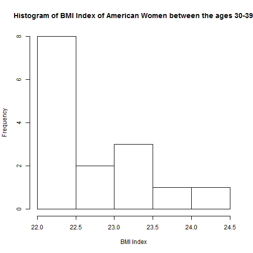
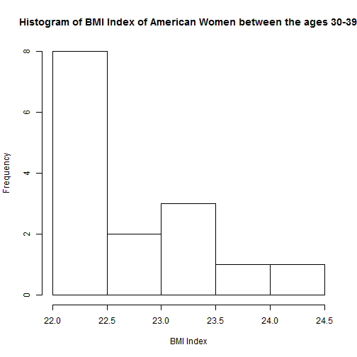

Health is of great concern to a large segment of the global population. To enable self-awareness around healthy eating and exercise we have developed the BMI Calculator.

BigAl37
Analyst
Health is of great concern to a large segment of the global population. To enable self-awareness around healthy eating and exercise we have developed the BMI Calculator.

In conclusion, we know this tool, the BMI Calculator, will be indispensable in determening an individual's health status. This tool, combined with a healthy exercise regime and a good diet will enable the population to live healthier and fitter lives.